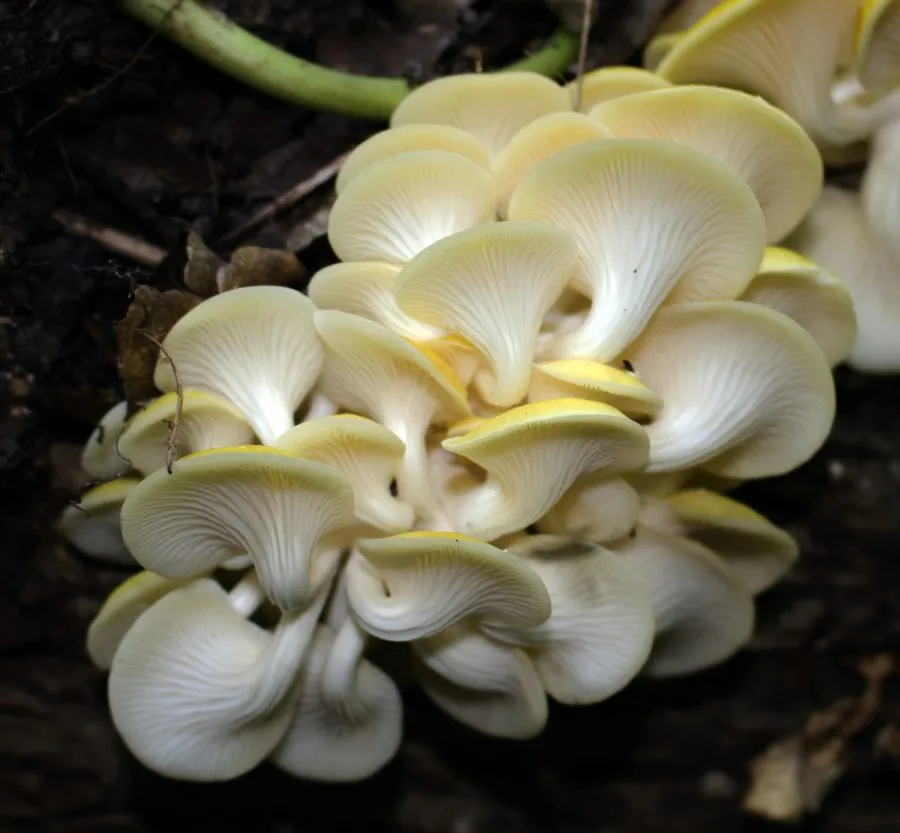

真菌 · 真菌界
榆黄蘑 Pleurotus citrinopileatus

榆黄蘑的菌盖呈明亮的金黄色、层层叠叠如花，丛生于榆树等阔叶枯木上，是东北著名的野生食用菌，现已广泛栽培。
- 分类
- 门担子菌门纲伞菌纲目伞菌目科侧耳科属侧耳属
- 栖息环境
- 榆、栎、杨等阔叶树的枯木与倒木，夏秋季丛生
- 地理分布
- 中国东北、华北林区，现各地广泛栽培
- 保护级别
- 暂无评估（IUCN 未评估，栽培食用菌）
物种志
榆黄蘑是担子菌门侧耳科的真菌，子实体丛生，常几十朵叠生在一起。菌盖呈漏斗形、扇形或半圆形，直径 3–10 cm，表面鲜黄色、金黄色至淡黄色，光滑，边缘内卷或呈波浪状；菌肉白色，薄而柔嫩。菌褶延生，白色至淡黄色，密集。菌柄偏生或中生，白色至淡黄色，长 2–6 cm，基部常相连。孢子印白色至淡紫色。
榆黄蘑野生于榆树、栎树、杨树等阔叶树的枯木和倒木上，靠分解木材生长，主要分布在中国东北、华北的林区，夏秋季出菇，是东北著名的野生食用菌。它颜色鲜艳、丛生如花，很容易辨认。如今榆黄蘑已广泛人工栽培，可用木屑、玉米芯和棉籽壳作培养料。它肉质柔嫩、味道鲜美，适合炒食、做汤和涮火锅；金黄色泽在菜肴中十分醒目，也可干制保存。
形态与习性
- 菌盖漏斗形或扇形，直径 3–10 cm
- 颜色鲜黄色至金黄色，十分醒目
- 菌褶白色至淡黄色，延生
- 菌柄偏生，白色至淡黄，长 2–6 cm
- 孢子印白色至淡紫色
- 食用性可食，肉质柔嫩
- 生境阔叶树枯木与倒木
趣味知识
- 榆黄蘑通体金黄色，成丛叠生时像一束黄色的花。
- 它原产中国东北，是当地著名的野生食用菌。
- 榆黄蘑多长在榆树上，“榆黄蘑”的名字由此而来。
- 它颜色鲜艳、味道鲜美，炒菜时非常好看。